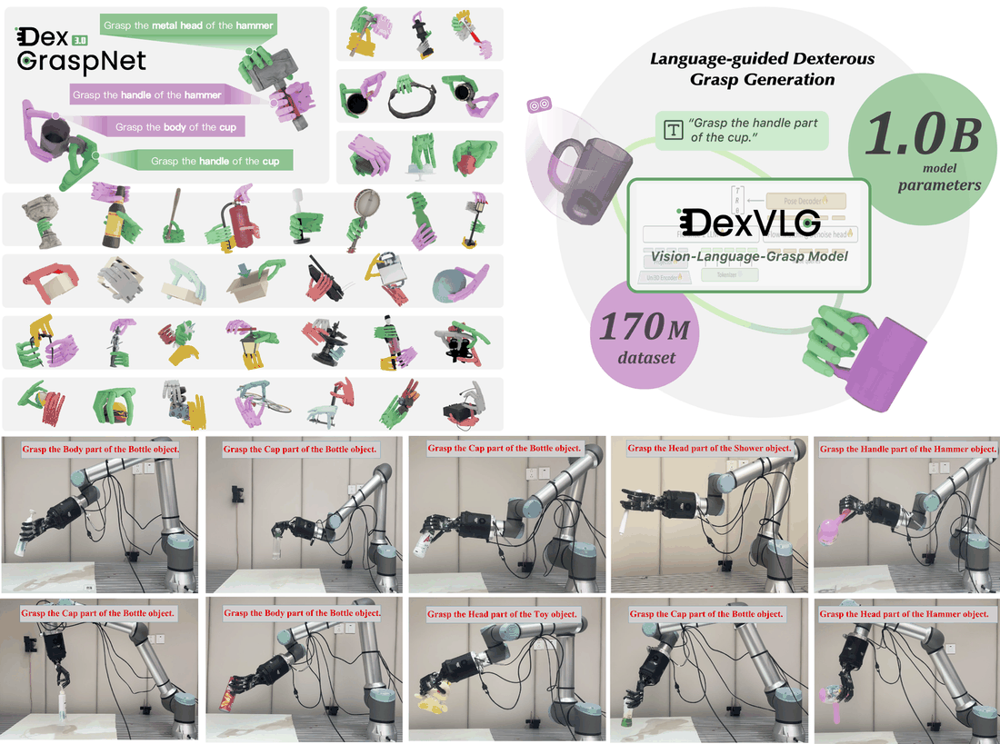

DexVLG is a large vision-language-grasp model for dexterous grasp pose prediction aligned with language instructions using single-view RGBD input. It is trained on DexGraspNet 3.0, a new synthetic dataset of 170 million dexterous grasp poses mapped to semantic object parts across 174,000 objects, each paired with detailed part-level captions. The model couples a vision-language model (VLM) with a flow-matching-based pose head to generate instruction-conditioned grasps on tabletop objects. It achieves over 76% zero-shot execution success in simulation and is validated on real-world objects.
Pairs a VLM with a flow-matching-based pose head to produce part-aware, language-conditioned dexterous grasp poses from single-view RGBD. Introduces DexGraspNet 3.0: a synthetic dataset of 170M grasp poses over 174k objects (sourced from Objaverse), each annotated with part-level captions. Dataset is split into wrap and pinch grasp modalities (103M grasps / 169k objects for wrap; 67M grasps / 139k objects for pinch). Uses an LP-based Differentiable Force Closure (DFC) optimization to synthesize more natural, stable grasps versus equal-magnitude contact-force assumptions. Employs part-aligned initialization (lid-like, disk-like, L-shaped, shaft-like categories) to guide grasp synthesis on object parts. Flow-matching denoising for pose generation outperforms standard diffusion (DDPM/DDIM) baselines.
DexGraspNet 3.0: 170M dexterous grasp poses across 174k objects with part-level captions (103M wrap / 67M pinch grasps). DexVLG model achieving over 76% zero-shot execution success rate in simulation and state-of-the-art part-grasp accuracy. Wrap-grasp success rates of 87.7% on LVIS-Seen, 79.1% on unseen objects, and 76.3% on SamPart3D. Demonstrated grasp quality with low penetration (1.75mm wrap / 1.42mm pinch) and Q1 stability of 0.085 (wrap) / 0.067 (pinch). Validated with successful real-world grasping demonstrations on physical objects. Showed flow-matching pose head outperforms diffusion-based alternatives for instruction-aligned dexterous grasp prediction.
Given single-view RGBD and a language instruction, DexVLG predicts a dexterous grasp pose on the specified semantic part of a tabletop object and executes it, achieving over 76% zero-shot success.
Figure is the paper's own teaser, captured from the paper or project page for personal study; PDFs/videos are not hosted here (buttons link out). Summary is my paraphrase from the abstract, full text and project page — see the paper for specifics. Credit: the original authors.